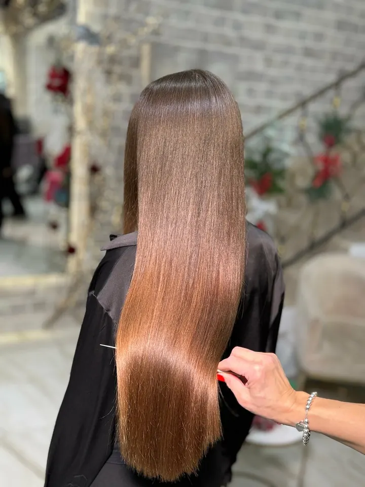
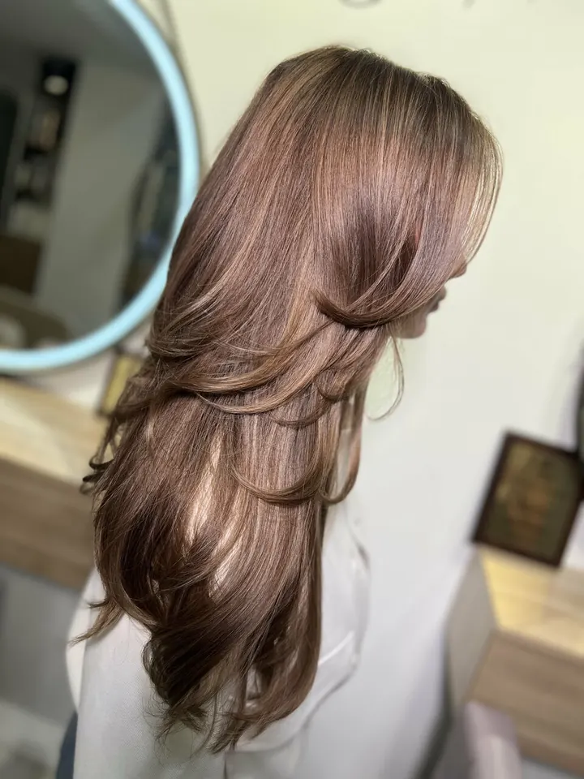
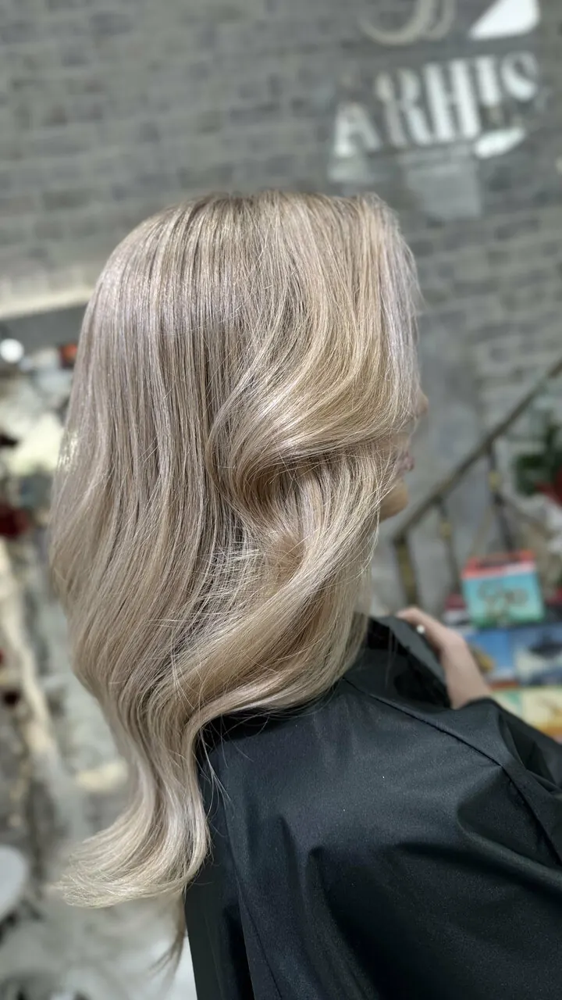
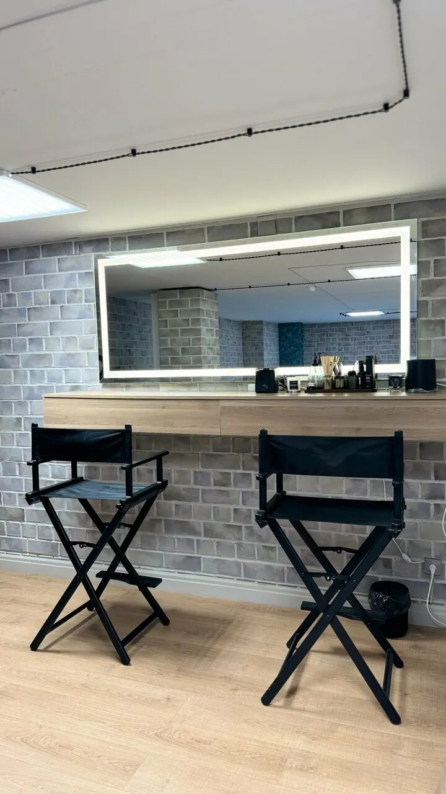
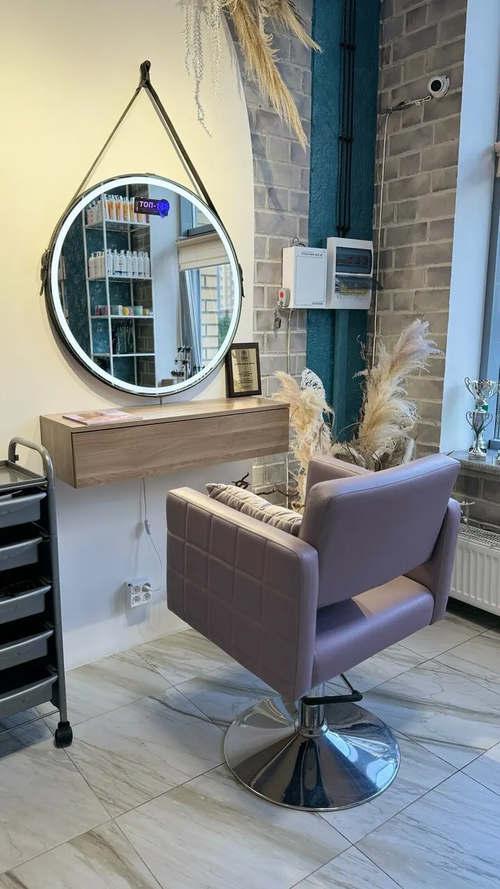
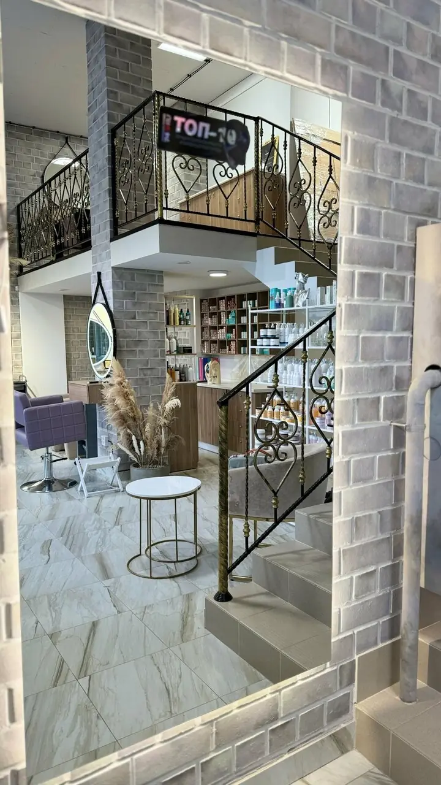

Студия красоты и ухода за волосами · Челябинск, ЖК Ньютон
Arhis – студия ухода и восстановления волос в Челябинске
Восстановление, выпрямление и реконструкция волос, уход за кудрями, стрижки и окрашивание – в уютной студии в ЖК Ньютон. Подберём процедуру именно для ваших волос и расскажем, как сохранить результат дома.

О студии
Arhis – студия, где главное – ваши волосы. Мы любим длинные, гладкие, блестящие волосы и любим кудри, поэтому большую часть времени занимаемся восстановлением, выпрямлением и реконструкцией, а кудрявым гостям помогаем подружиться со своими локонами.
В команде – стилисты, колористы, технологи по выпрямлению и восстановлению, мастера по реконструкции и наращиванию волос, а ещё бровист. Перед процедурой мастер обсудит с вами всё, что волнует, и предложит уход, который подходит вашему типу волос, а после – подскажет, как поддерживать результат дома.
- Восстановление и реконструкция волос – основное направление студии
- Кудрявый салон: уход, стрижка и окудрение для вьющихся волос
- Профессиональный уход для дома – подберём вместе с мастером
- Можно прийти с собакой до 35 см, есть парковка и Wi‑Fi
Работы


Студия



Услуги
Восстановление и выпрямление
Холодное восстановление, кератин и ботокс, тотальная реконструкция – процедуры, после которых волосы становятся мягкими, гладкими и послушными. Мастер подберёт состав и глубину ухода под ваши волосы.
Кудри и завивка
Уход за кудрявыми волосами и окудрение, а для тех, кто мечтает о локонах или объёме, – биозавивка, корейская и цифровая завивка, прикорневой объём.
Стрижки, окрашивание и наращивание
Женские стрижки, однотонное и сложное окрашивание, наращивание волос. Для особого случая – укладка и макияж, а для свежести кожи головы – пилинг.
Брови и ресницы
Оформление бровей, ламинирование, окрашивание и ботокс ресниц – чтобы образ был завершён.
Актуальные цены и свободное время – в онлайн-записи.
Записаться онлайнЧто говорят наши гости
«Любимый салон,всё красиво,современно, после того как с тобой поработает мастер,чувствуешь себя женщиной- королевой. Приходите,получите хорошее настроение и ухоженные волосы.»
«Эта студия, что-то нереальное!
Просто превзошла все ожидания! Сервис на высоте: заботливо встретят, предложат несколько напитков на выбор, повесят вещи.
А про отношение к клиентам я вообще молчу, меня так обласкали, что уходить не хотелось.А по самой процедуре - подход на высшем уровне! Подробная консультация с рекомендациями, очень бережный сам процесс результат неприлично шикарный!
И еще, я так не расслаблялась даже на массаже, как здесь! Вы меня покорили!»
«Видела много рекомендаций на эту студию от своих хороших знакомых. Поэтому, без сомнений, решила воспользоваться услугами. Делала «тотальное восстановление волос» с подравниванием кончиков. Место очень приятное: чисто, красиво (новогодний декор особенно), приятная музыка, сервис на высоте, чай/кофе предлагают. Мастера вежливые, опрятные. Процедура понравилась. Волосы получили необходимый уход.
Приду ещё.»
«С мастерами Arhis я с самого открытия студии, и все это время у меня красивые, здоровые волосы, мне удалось отрастить хорошую длину, а ведь раньше они путались, ломались и выглядели очень печально. Отдельная благодарность Татьяне и Галине, благодаря их професионализму у меня не просто шикарные дисциплинированные волосы, но и максимально искусно замаскирована седина, сохранен естественный оттенок волос.»
Ждём вас в студии
Челябинск, ЖК Ньютон, проспект Героя России Е.Н. Родионова, 8. Рядом остановка «Проспект Героя России Е.Н. Родионова», есть парковка.
Ежедневно с 10:00 до 20:00, по предварительной записи.
5,0 Яндекс Карты · 79 отзывов